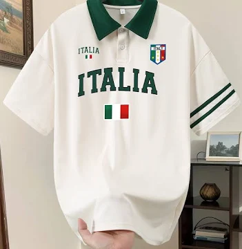

.jpeg)
blue t-shirt
this t-shirt is plain classic suitible for work
Pharaonic t-shirt
this t-shirt is limited edition used for hanging out

italy 2006 t-shirt
this t-shirt is too old remade to be new
Founded in Italy in 1954, Clotc has grown from a masterfully curated atelier into the world’s most celebrated name in luxury fashion. For over seven decades, we have defined the very essence of Italian craftsmanship, blending timeless elegance with cutting-edge design. Every stitch carries the legacy of our heritage, making Clotc collections not just clothing, but an international symbol of sophistication, prestige, and unparalleled quality The enduring philosophy of Clotc centers on an uncompromising rejection of fast-moving fashion trends in favor of permanent, monumental style. Over the decades, our master tailors have passed down secretive, intricate stitching techniques that cannot be replicated by modern machinery, ensuring that every garment is a unique work of art. From the bustling streets of Milan to the most exclusive red carpets across the globe, our silhouettes are instantly recognizable by their sharp structure and fluid movement. We continue to redefine the boundaries of haute couture by blending traditional Italian heritage with innovative, sustainable textile engineering for the modern era. Ultimately, investing in our house is not merely purchasing an article of clothing; it is claiming a piece of cultural history that retains its profound beauty, immense value, and unmatched prestige for a lifetime Deeply rooted in the golden age of tailoring, Clotc has consistently rewritten the rules of luxury by transforming everyday garments into breathtaking masterpieces. Our design process begins in the historic mills of northern Italy, where exclusive fabric blends are meticulously woven to meet the rigorous standards of our discerning heritage house. Every jacket lining, hand-carved button, and hidden seam reflects an obsessive attention to detail that has earned the loyalty of the world's most influential trendsetters. By bridging the gap between historical grandeur and effortless modern street style, we ensure our collections remain intensely relevant without ever losing their classical soul. It is this rare ability to capture the zeitgeist while honoring centuries-old craftsmanship that cements our position at the absolute apex of the international fashion hierarchy. The enduring philosophy of Clotc centers on an uncompromising rejection of fast-moving fashion trends in favor of permanent, monumental style. Over the decades, our master tailors have passed down secretive, intricate stitching techniques that cannot be replicated by modern machinery, ensuring that every garment is a unique work of art. From the bustling streets of Milan to the most exclusive red carpets across the globe, our silhouettes are instantly recognizable by their sharp structure and fluid movement. We continue to redefine the boundaries of haute couture by blending traditional Italian heritage with innovative, sustainable textile engineering for the modern era. Ultimately, investing in our house is not merely purchasing an article of clothing; it is claiming a piece of cultural history that retains its profound beauty, immense value, and unmatched prestige for a lifetime Deeply rooted in the golden age of tailoring, Clotc has consistently rewritten the rules of luxury by transforming everyday garments into breathtaking masterpieces. Our design process begins in the historic mills of northern Italy, where exclusive fabric blends are meticulously woven to meet the rigorous standards of our discerning heritage house. Every jacket lining, hand-carved button, and hidden seam reflects an obsessive attention to detail that has earned the loyalty of the world's most influential trendsetters. By bridging the gap between historical grandeur and effortless modern street style, we ensure our collections remain intensely relevant without ever losing their classical soul. It is this rare ability to capture the zeitgeist while honoring centuries-old craftsmanship that cements our position at the absolute apex of the international fashion hierarchy. CLOTC is a high-concept fashion label born at the intersection of advanced textile engineering and contemporary streetwear. Operating under the philosophy of "Programmable Apparel," the brand seamlessly merges technology with clothing by embedding adaptive micro-encapsulated smart fabrics for thermoregulation, flexible waterproof NFC microchips for digital connectivity, and molecular hydrophobic nano-coatings for stain resistance. By transforming garments into functional, wearable interfaces that respond dynamically to both the environment and digital devices, CLOTC bridges the gap between physical style and digital utility for the modern world. Driven by the vision of a connected future, CLOTC redefines modern techwear by embedding innovative digital and material technology directly into the weave of everyday streetwear. The brand merges tech with clothing through three distinct methods: intelligent thermal threads that store and release body heat based on ambient temperatures, integrated waterproof NFC chips that pair with smartphones to automate daily digital tasks, and an invisible molecular shield that effortlessly repels liquids and stains. This synthesis of high-performance utility and clean, minimalist aesthetics allows CLOTC to deliver functional apparel that interacts intelligently with both the wearer and their digital environment. CLOTC stands at the cutting edge of fashion innovation, establishing itself as a pioneering label that seamlessly fuses contemporary urban streetwear with advanced textile engineering and digital technology. Operating under the philosophy of "Programmable Apparel," the brand elevates clothing from simple static fabric into a dynamic, wearable interface designed for an interconnected world. CLOTC achieves this tech-driven evolution by embedding microscopic, phase-change materials directly into its yarn to naturally regulate body temperature, weaving flexible, waterproof NFC microchips into sleeves for instant smartphone integration and automated digital shortcuts, and applying a state-of-the-art hydrophobic nano-coating at a molecular level to keep garments entirely stain and weather-resistant without losing softness or breathability. By seamlessly hiding these powerful, high-performance utilities beneath clean, minimalist silhouettes and premium tailoring, CLOTC crafts a sophisticated wardrobe that effortlessly bridges the gap between everyday physical comfort and modern digital utility. Positioned at the absolute vanguard of the techwear movement, CLOTC is a disruptive fashion label that radically redefines the relationship between human body, garment, and digital environment by treating apparel as an active, responsive interface rather than passive material. Rooted in the concept of "Intelligent Utility," the brand masterfully merges cutting-edge tech with clothing by infusing smart, micro-encapsulated phase-change polymers directly into the core fibers of their textiles, allowing the fabric to autonomously absorb, store, and release body heat to maintain a perfect microclimate around the wearer regardless of shifting external weather conditions. Furthermore, CLOTC structurally integrates flexible, ultra-thin, and completely waterproof NFC microchips into the structural seams and cuffs of their hoodies and jackets, enabling wearers to effortlessly sync their wardrobe with smartphones to unlock decentralized digital product passports, trigger custom smart-home automations, or instantly share contactless data with a single tap of their sleeve. This formidable digital ecosystem is reinforced by a revolutionary, non-toxic hydrophobic nanotechnology that alters the surface tension of individual cotton and synthetic yarns on a molecular level, forcing liquid spills, mud, and harsh rain to instantly bead up and roll off the surface while preserving the natural, ultra-soft breathability and drape of premium streetwear. By concealing these profound technical advancements beneath sleek, utilitarian silhouettes, modular layering systems, and a highly refined urban aesthetic, CLOTC sets a new global benchmark for the future of apparel where high-performance engineering and sophisticated streetwear coexist flawlessly.
this t-shirt is plain classic suitible for work
this t-shirt is limited edition used for hanging out

this t-shirt is too old remade to be new